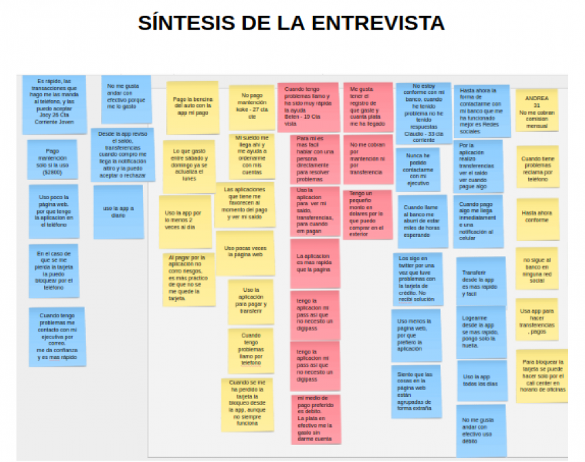
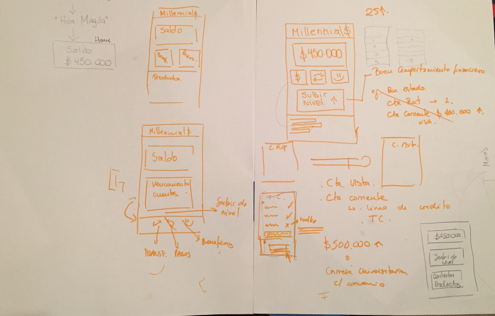
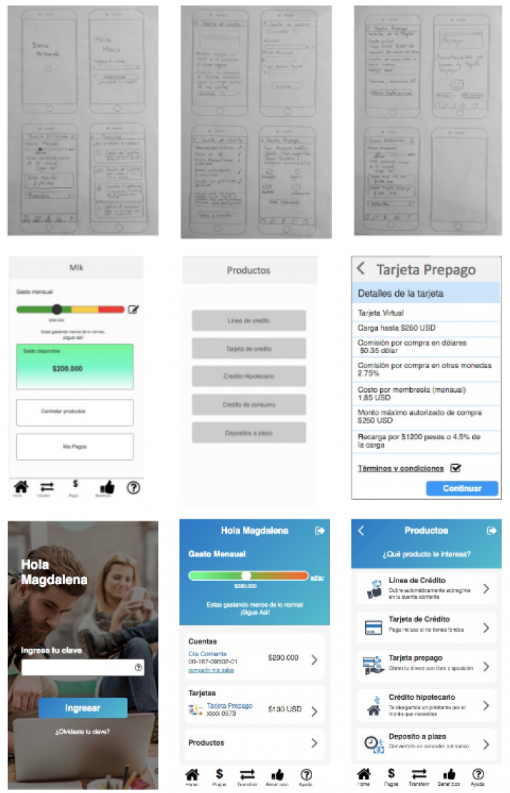

Mi Sitio
Este proyecto llamado “MI SITIO”, consiste en llegar de mejor manera a los usuarios más jóvenes, que no se encuentran conformes con el servicio. El proposito es entender a los clientes nuevos y jovenes de una banca tradicional. Saber que les gusta y que no, de la forma que interactuan con sus finanzas actualmente, entender bien cuales son sus gustos y preferencias.
Se realizó una serie de entrevistas a jóvenes pertenecientes a la generación “millennials”, que no llevaban más de 1 año ½ en su. Se utilizó la metodología Lean Ux.
Se creó un prototipo de la nueva banca digital.Se realizaron sesiones de testing.
Se Iteró y se concluyó.

Ideacion

Pudimos identificar lo que les gusta y lo que no, lo que les molesta de la banca donde se encuentran hoy en día, lo que les da miedo, como también las cosas que les agrada y les hace sentir tranquilos
En este paso, investigamos que podría ser más atractivo para los usuarios querer ingresar a nuestra aplicación y quedarse en ella. Se comenzó un prototipado, donde una vez terminado, se testeó.

Se una hipótesis, Se validó, se testeó la usabilidad. Ya que se tenía conocimiento de la forma en que pensaban los usuarios, se pudo modificar el diseño, realizando los cambios correspondientes para obtener un producto mínimo viable (MVP).